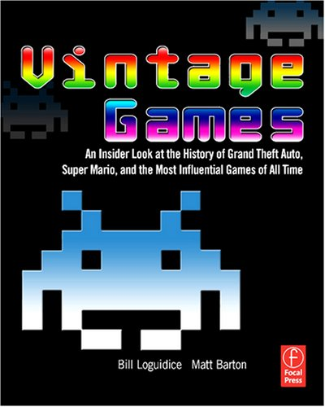

Calendar
Readings
It is encouraged that you complete all readings before the start of lecture on the day assigned. Readings will not be discussed fully in class, though the topics from the readings will illuminate that day's lecture. If you cannot complete all readings before class, be sure to complete readings before each test, as some of the test questions will reference the readings.
For each class period, I've also listed a number of optional readings. You will not be tested over any of this material.
Textbook
The required textbook for this class is:
Barton, M., & Loguidice, B. (2009). Vintage Games: An Insider Look at the History of Grand Theft Auto, Super Mario, and the Most Influential Games of All Time. Focal Press.
This book is relatively inexpensive and is an easy read. In lecture, we'll cover broad trends in video games, as well as specific games that have made a significant impact on the industry and culture; however, we don't have time to cover every important game in sufficient detail. The readings from this book will give you a more in-depth look at some of the important games, many you may have played!
Note: The Bonus Online Chapters are from the same authors that wrote the course textbook, Vintage Games. These chapters are posted on the website Gamasutra.com and are typically broken into 4-6 parts. Be sure to read the entire article, not just the first part.
Week 1
Assignments
DUE: Discussion Post 1, Discussion Responses 1 and 2 by 11:59 p.m. on Friday, July 4
Topics
Tuesday, July 1
- Course Introduction: Why Video Games are Important to Study
- The First Video Games, 1950s-1960s
- Spacewar! by Steve Russell
- Pong by Ralph Baer
- Arcades and the First Generation Consoles, 1971-1977
- The Magnavox Odyssey
- Coleco Telstar
- The Atari Home-version of Pong
Required Readings
- Vintage Games: Bonus Online Chapter: Spacewar!
- Vintage Games: Bonus Online Chapter: Pong
Topics
Thursday, July 3
- The Video Game Crash of 1977
- The Golden Age of Arcade Games, 1978 through early 1980s
- Second Generation Consoles, 1976-1983
- The Fairchild Channel F
- Atari 2600
- Atari 5200
- Odyssey²
- Intellivision
- ColecoVision
- Vectrex
- Emerson Arcadia 2001
- The Video Game Crash of 1983
Required Readings
- Vintage Games: Chapter 13: Pac-Man
- Vintage Games: Chapter 14: Pole Position
- Vintage Games: Chapter 16: Space Invaders
Optional Readings
- Vintage Games: Bonus Online Chapter: Defender
- Interested in video game industry stats? Check out the Entertainment Software Association's 2014 Essential Facts about the Computer and Video Game Industry fact sheet.
- Video games have been around for a long time, and many companies have come and gone. Wikipedia has an extensive list of over 500 Defunct Video Game companies. See any of your favorite game companies on this list?
- Interested in learning more about pinball? An inside look at the new Wizard of Oz pinball game.
- Want another perspective on Spacewar!? Spacewar!, one of the world's first digital games, is a primer on creative design
- Pong's influence is still felt 40 years later. Check out this video of Pong being played on the side of a building.
- Don't know much about Dungeons & Dragons? Check out this short video documentary by PBS: Dungeons & Dragons and the influence of tabletop RPGs.
- A most unusual book review: How a Guggenheim fellow obsessed over Atari's Breakout -- and found the future instead.
- Another perspective on why the E.T. game was so bad.
- What did the creator of E.T., "the worst video game in history," do with his life? Make a documentary about BDSM for one thing.
- Are arcades really gone? The surprising, stealth rebirth of the American arcade.
- Want to know what happens to your body after 56 hours of Missile Command?
- Pac-Man has been ported or cloned well over a hundred times. This video compares 19 versions of Pac-Man, including many on classic gaming consoles we've discussed in class.
- AtariAge: A comprehensive website that includes instruction manuals and box art for nearly every Atari game.
- Growing Up in Arcades: 1979-1989: A Flickr account where people upload photos of themselves in arcades. An interesting look at the former hub of video game activity: the arcade.
- 10 unique videogames from the Cold War
Week 2
Assignments
Discussion Post 2, Discussion Responses 3 and 4 by 11:59 p.m. on Friday, July 11.
Topics
Tuesday, July 8
- Early computer games
- Early handheld games
- Third Generation Consoles, 1983-1992
- Nintendo Entertainment System
- Sega Master System
- Atari 7800
Required Readings
- Vintage Games: Chapter 11: King's Quest: Quest for the Crown
- Vintage Games: Chapter 23: Ultima
- Vintage Games: Chapter 25: Zork
Topics
Thursday, July 10
- Fourth Generation Consoles, 1987-1996
- TurboGrafx-16
- Mega Drive/Genesis
- Super Nintendo Entertainment System
- Neo Geo
- Handhelds in the 1990s
- Arcades in the 1990s
Required Readings
- Vintage Games: Chapter 10: John Madden Football
- Vintage Games: Chapter 17: Street Fighter II
- Vintage Games: Chapter 20: Tetris
Optional Readings
- Vintage Games: Chapter 2: Castle Wolfenstein
- Vintage Games: Chapter 8: Flight Simulator
- Vintage Games: Chapter 19: Super Mario Bros.
- 1993 article from Wired Magazine about MUDs (multi-user dungeons), the precursor to today's modern MMORPGs. The dragon ate my homework. (The article is actually eight pages: it's a little hard to see the "Next page" links).
- Fascinating Nintendo training video from 1991, which explains how you should deal with customers who have problems with their video games. Take note of the subtle contempt Nintendo has for its own customers!
- Nintendo didn't make the Famicom red because it was cheap
- Want to know the differences between Japanese and American versions of the same game? Sometimes they are minor, sometimes considerable, and sometimes downright weird. Legends of Localization catalogues the differences in many classic games, including Super Mario Bros. and The Legend of Zelda.
- Want another take on Zelda II? Exactly what genre is Zelda II: Action-adventure, RPG, action-RPG?
- Want to know more about why Megaman was such an influential game? Check out this 10-minute video outlining what makes the original Megaman so special. (Contains some strong language)
- An Ode To Instructions: Why I'll Miss Video Game Manuals
- This article isn't about a video game, but a game show. In 1984, Michael Larson "broke" the game Press Your Luck by finding a flaw in the system. He thought like a true gamer, and won the equivalent of $246,000 in today's dollars.
- The Cutting Room Floor. A wiki dedicated to documenting unused content in videogames. It also documents videogame prototypes.
- Lost Levels. A website dedicated to documenting videogames that were never actually released.
- Hockey fans, enjoy: EA's NHL '94 remains landmark game after 20 years
- Chiptunes are songs created using classic gaming consoles' sound cards. This article provides a historical look at how people started using their gaming consoles in ways never intended by the manufacturer. Endless loop: A brief history of chiptunes.
- Old Game Magazines. A Tumblr that features scans from old video game magazines.
Week 3
Assignments
Discussion Post 3, Discussion Responses 5 and 6 by 11:59 p.m. on Friday, July 18.
Topics
Tuesday, July 15
- Computer games in the 1990s
- Creation of the ESRB
- Discussion on the effectiveness of ratings systems
Required Readings
- Vintage Games: Chapter 4: Diablo
- Vintage Games: Chapter 6: Dune II: The Building of a Dynasty
- Vintage Games: Chatper 12: Myst
Topics
Thursday, July 17
- EXAM 1
- Fifth Generation Consoles, 1993-2006
- Sega Saturn
- Sony PlayStation
- Nintendo 64
- Virtual Boy
- Atari Jaguar
- Sixth Generation Consoles, 1998-2013
- Sega Dreamcast
- Sony PlayStation 2
- Nintendo Gamecube
- Microsoft Xbox
Required Readings
- Vintage Games: Chapter 7: Final Fantasy VII
- Vintage Games: Chapter 18: Super Mario 64/Tomb Raider
Optional Readings
- Vintage Games: Chapter 1: Alone in the Dark
- Ever heard of competitive gaming? Some gamers are still hooked on games decades old. Playing to Lose: How competitive Tetris players approach an unwinnable game
- Did you play the original Doom for PC? Creators John Romero and Tom Hall dissect the development process in this hour-long video postmortem.
- Pokemon may have started in the late 1990s, but its influence continues today. For all you Pokemon lovers, check out this exhaustive retrospective, which goes through the end of Generation 4 of Pokemon.
- Learn more about video game ratings at theEntertainment Software Rating Board's official website.
- Do you agree with this idea? The case for video games as an Olympic sport.
- Want to know why Korea is so good at StarCraft e-Sports? Check out this three-video series: Part 1 | Part 2 | Part 3
- Apple is now a major distributor of video games via iPhones, iPads, and the like. But this isn't the first time they've attempted to make money in the video game business. Apple's folly: The story of the Pippin game console
- An Arabic translation of Ocarina of Time blurs the boundaries of culture and art.
- Interview with the man who created Street Fighter.
- 15 year anniversary retrospective: GoldenEye 007.
- A closer look at the first Grand Theft Auto: Eurogamer.net retrospective: Grand Theft Auto.
- Wanna know what it was like working in the trenches, selling video games during the 1990s? How I launched 3 consoles (and found true love) at Babbage's store no. 9.
Week 4
Assignments
Discussion Post 4, Discussion Responses 7 and 8 by 11:59 p.m. on Friday, July 25.
Topics
Tuesday, July 22
- Seventh Generation Consoles, 2004-present
- Microsoft Xbox 360
- Sony PlayStation 3
- Nintendo Wii
- Eighth Generation Consoles, 2011-present
- Wii-U
- Sony PlayStation 4
- Nintendo 3Ds
- Sony PlayStation Vita
- Xbox One
- The rise of social/casual gaming
- Current issues in gaming
Required Readings
- Vintage Games: Chapter 9: Grand Theft Auto III
- Vintage Games: Chapter 22: The Sims
Topics
Thursday, July 24
- Violence in Video Games
- Common Views on Violence
- Famous Violent Games
- The Case of Columbine
- Violence and Aggression Research
Required Readings
- Vintage Games: Chapter 5: Doom
- Anderson, C. A., Shibuya, A., Ihori, N., Swing, E. L., Bushman, B. J., Sakamoto, A., Rothstein, H. R., & Saleem, M. (2010). Violent video game effects on aggression, empathy, and prosocial behavior in Eastern and Western countries: A meta-analytic review. Psychological Bulletin, 136(2), 151-173. (Article for download on E-learning). This scholar believes that there is evidence for aggressive effects after playing violent video games, and reviews literature in support of this argument.
- Ferguson, C. J. (2007). The good, the bad and the ugly: A meta-analytic review of positive and negative effects of violent video games. Psychiatric Quartery, 78, 309-316. (Article for download on E-learning). Ferguson offers a contrarian view to Anderson, citing numerous problems with video game violence research.
Optional Readings
- Scholarly article investigating gameplay in Grand Theft Auto. The accidental carjack: Ethnography, gameworld tourism, and Grand Theft Auto.
- Psychologist Jamie Madigan examines the neuroscience of one reason why The Walking Dead is so effective at eliciting empathy from players. The Walking Dead, mirror neurons, and empathy.
- The Walking Dead is a game of forced choices, and these choices affect how the game progresses. But does it really offer players meaningful choices? The Walking Dead and the consequence of false freedom. A great read if you've completed The Walking Dead.
- Dreamcast: A forensic retrospective. From Eurogamer.net
- The history of Dreamcast: Party like it's 9-9-99. Another look, from IGN, at the Dreamcast's successes and failures.
- A Dolphin's Tale: The Story of GameCube. An exhaustive history on the creation and fall of the GameCube, documenting the behind-the-scenes drama between Nintendo and publishers.
- Retro City Rampage is an 8-bit homage to Grand Theft Auto. This video explains what the creator had to do to the game to get it to play on an actual NES. Fascinating video if you have an interest in programming.
- Graphical evolution of First Person Shooters: 1992-2012. Excellent video that shows just how much FPSs have changed throughout the decades.
- Speedrunning is the practice of beating video games as fast as possible. Learn more about this hardcore gaming subcommunity: Speedruns ignore story and character for velocity: the gamers who find beauty in speed.
- Mobile gaming has hit it big the last few years, and investors want in on the action. Their money, though, may be going to waste. Zynga's stock fail was sadly predictable, and the company is left with few prospects for the future.
- A breakdown of where the profit goes for $60 video game.
- The agony and the Exidy: A history of video game violence and the legacy of Death Race. Scholarly article.
- Illinois gaming law struck down, provides glimpse of FEPA future? An article from 2005 about a proposed video game censorship law that was struck down.
- Why Quake changed games forever.
- Two great Extra Credit (web show) videos deconstructing the violence and militarism in Spec Ops: The Line. Part 1 Part 2
- How the American military is using videogames to capture the hearts and minds of children
- Playing War: How the Military Uses Video Games
Week 5
Assignments
Discussion Post 5, Discussion Responses 9 and 10 by 11:59 p.m. on Friday, August 1.
Topics
Tuesday, July 29
- Body image and hypersexualized video game characters
- Sexual content in games
- Gender roles of video game characters
Required Readings
Sex in games, five years after "Hot Coffee". How the Grand Theft Auto scandal changed videogames and the state of digital intimacy, with thoughts from the developers of God of War and Heavy Rain.Lara Croft and the reinvention of game heroes. How Tomb Raider changed games, and why its leading lady still matters.
Topics
Thursday, July 31
- Video game addiction
- Portrayals of race in video games
- Portrayals of LGBT characers
Required Readings
- The psychology of: free-to-play
- Gaming (ad)diction: Discourse, identity, time and play in the production of the gamer addiction myth. Scholarly article, one perspective on gaming addiction.
- Moving forward on race in games: BioWare Montreal designer Manveer Heir interview.
Optional Readings
- Sex in games: David Cage asks why standards in video games are much stricter than those in film.
- A Visual History of Attractive Video Game Characters: The 80s. An interesting series of articles looking at how male and female characters have been portrayed throughout the decades.
- A Visual History of Attractive Video Game Characters: The 90s
- A Visual History of Attractive Video Game Characters: The 00s
- It's time to retire "boob plate" armor. Because it would kill you.
- Lara Croft: Feminist icon or cyberbimbo? On the limits of textual analysis
- Sexism in Video Games [Study]: There is Sexism in Gaming Not exactly a scientific survey, but the general trends that this piece highlights are pretty interesting, especially the qualitative data.
- Welcome to the club - Women in video games. 1983 article about women game designers.
- Here's a devastating account of the crap women in the games business have to deal with. In 2012.
- And here's why women in the games business put up with so much crap.
- Analysis of Cate Archer, female protagonist of the spy game No One Lives Forever: Gaming's greatest unsung heroine.
- Vintage Games: Chapter 3: Dance Dance Revolution
- Video Games Boost Brain Power, Multitasking Skills. NPR story that discusses the many positive benefits of playing video games, some you might not expect.
- Two New Studies Using World of Warcraft from Colorado University. Studies describe positive effects of playing games like WoW.
- The thorny issues of sexual assault and race in Prison Architect. Prison Architect is a sandbox game, similar to Sim City or the various Tycoon building games, in which the goal is to create and maintain a maximum security prison.
- Luke Miller debuts "My ex-boyfriend the space tyrant" video game: Interview with the creator.
Week 6
Topics
Tuesday, August 5
- Educational video games
- Online gaming communities
- Harassment in online communities
Required Readings
- Vintage Games: Chapter 24: Ultima Online
- Sexual harassment in the world of video gaming
- Homophobia and harassment in the online gaming age: Gay, lesbian, bisexual and transgendered gamers face an uphill battle.
- Annetta, L. A. (2008). Video games in education: Why they should be used and how they are being used. Theory Into Practice, 47, 229-239. This scholarly article is a little old, but the rationale for using video games for education purposes still holds. The article can be found under "Resources" on e-Learning.
Topics
Thursday, August 7
- EXAM 2
Optional Readings
- An Interview With Don Rawitsch, Co-Creator of Oregon Trail
- A history of griefing: meet the gamers who, if you're lucky, only want to ruin your day for kicks
- Shaw, A. (2012). Talking to gaymers: Questioning identity, community and media representation. Westminster Papers in Communication & Culture, 9, 67-89. This scholarly article discussed one type of online community, gay gamers (sometimes called "gaymers"). The article can be found under "Resources" on e-Learning.
- Making money as a Zelda speed runner. Speed running is the practice of playing through a video game as fast as possible. In recent years, a small community has developed around this style of gameplay.